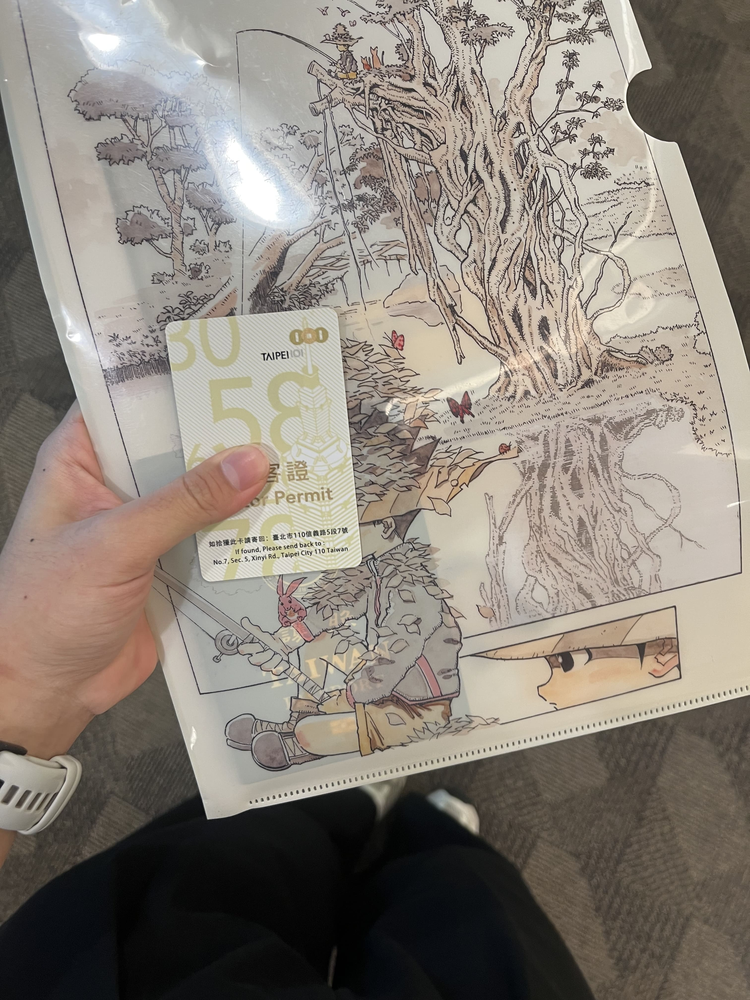

2025申請德國交換學生簽證詳細攻略！
更新時間：2025/11/25
ㄧ、我需要簽證嗎？
根據德協提供的資訊，臺灣護照持有人不須簽證即可前往申根會員國為短期之觀光或商務旅遊，但不得工作。德國為申根會員國之一。180天內最長得停留90天。因此若持有臺灣護照並要在德國當交換學生超過三個月，就需要申辦學生簽證。
二、我要怎麼申請德國學生簽證？
在搞清楚要當交換學生後，相信這是大部分的人最大的問題。相信大家都有耳聞德協簽證要辦很久，我自己當時也是非常擔心，不過從2025開始，德協將學生簽證（德國高等學院正式學生與欲申請德國高等學院者）改成透過線上網站申請，速度真的快了超級多！最大的改變就是不再限制需要三個月內才能辦理簽證，也不再需要在網路上面搶辦理時間，可以從容的辦理簽證，所以大家不需要害怕！
由於當初我也是在網路上完全找不到任何關於新系統的申請程序，整個處理得心驚膽顫，也不知道新系統到底如何，因此我接下來將一步步教大家如何完成德國簽證的申請，也會提供我當時辦理的時程表給大家參考！
首先要進入到德協的網站（https://digital.diplo.de/#Auslandsportal線上簽證系統），並且創辦一個帳號。

進入網站之後選擇Visa

點Visa之後往下滑找到Visa for study, training or further education，並選擇Study purposes and seeking a university place

點進去之後他會介紹學生簽證以及需要準備什麼資料，滑到最下面會要你選國家，直接打Taiwan就會出現了，接著就按Apply online now

進去之後就註冊一個帳號

辦好帳號之後就create a new process, 一樣選擇study purposes and seeking a university place

然後就照著這個步驟開始填寫
填完之後就可以繳交，若東西有問題，德協將會傳訊息告知你要重新修改。我當時大概三天左右德協就會回復我，不過近期回覆速度好像比較慢，建議大家可以去搜尋一下更近期的資料~
三、辦簽證那天
在一切都順利上繳後，我就可以預約去辦簽證的時間了，我當然是立馬預約了最近的時間，並在下一週前往台北101。早上到了就先打電話上去並取得了訪客證！超酷！我當時就是按照他要我帶的東西，包括大頭照、現金、護照、身分證、限制提領帳戶的證明、英檢成績單等等，總之就是乖乖帶他說要帶的東西就不會有問題。
四、辦簽證時程
5/1辦理expatrio
5/2成功開設expatrio帳戶（代表可以匯錢進去的意思）
5/7早上去台灣銀行電匯到expatrio
5/7下午就收到錢已到帳的訊息（超迅速！）
5/7晚上上傳完所有需要的資料
5/12收到德協資料要修改的訊息
5/13收到選時間的郵件（很多時間可以選！）
5/19到101交資料
6/3 收到護照（兩週）
同場加應、開wise帳戶流程
5/18開通wise帳戶（須先匯20歐到帳戶，我是直接用信用卡匯）開通帳戶之後才能使用電匯！
5/19到玉山銀行匯款
5/20下午wise顯示入帳